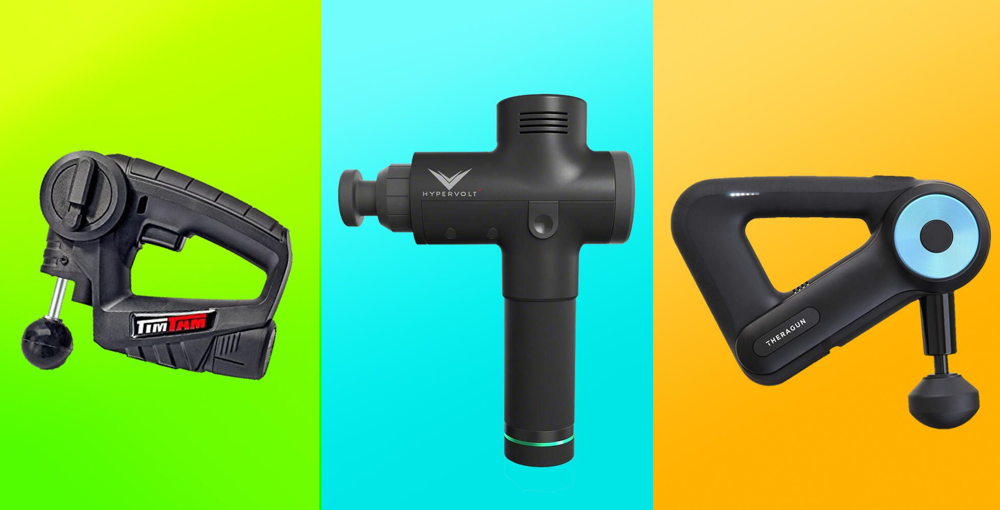
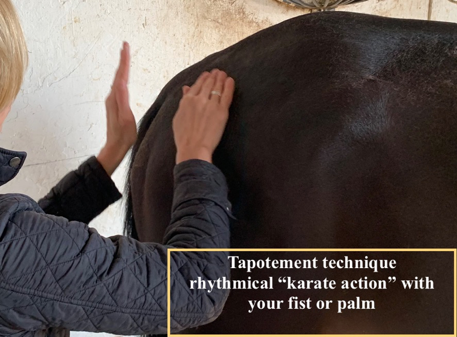
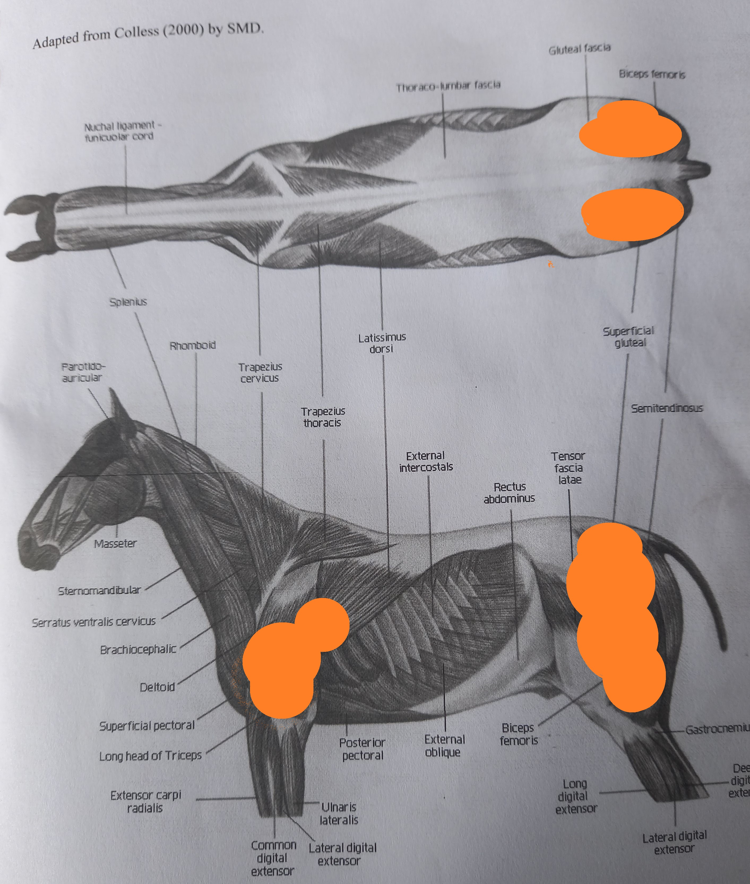
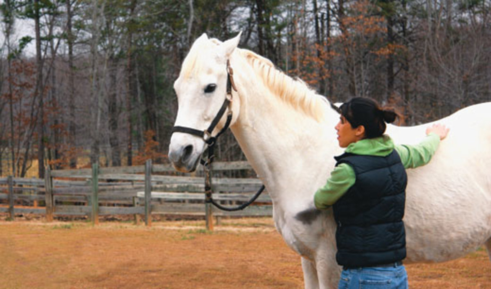

Equusential Blog Blog Posts

Posted on 09 March 2022
What do you think of mechanical massage tools on the horse?
Part 2: Percussion technique and actions, massage guns and their impacts on your horse, why the concern?
Mechanical massage tools used in the equine field may be specifically designed for horses or intended for human use but then used on horses. Common examples include an equine massage pad, equine massage mitt, percussive massage gun, chiropractic activator.
Used correctly: massage tools increase circulation, relieve tension and assist in pain relief. If incorrectly applied: they can cause harm and negative associations for the horse.
In discussing mechanical percussion tools, I focus on the massage gun as this is the most common tool that I see people purchase (usually for themselves) and then use incorrectly on their horses. Chiropractic activators are regularly seen doing the rounds on social media, advertised to horse owners.

Image Source:CNET
Incorrect or inappropriate use of an activator or massage gun on your horse MAY result in the following.
- Interacting with a muscle or other body part too strongly causes discomfort for the horse.
- Forcefully impact a bone, artery, nerve, lymph nodes, internal organs, tendons, or ligaments.
- Using a tool for too long can cause tissue damage, bruising and extreme soreness.
- Frightening or hurting the horse causes a negative reaction that can hurt you or the horse
Damage may occur if percussion is too strongly or arbitrarily applied, the risk of damage increases using mechanical rather than manual force.
What is percussion?
First, let's cover what percussion is and how it is used in massage:
Percussion or tapotement techniques used in massage include hacking, cupping or pounding with the hands or forearms - delivering a series of soft blows rhythmically, shortly and sharply whilst keeping the wrists flexible. When using percussion, the masseuse monitors their client for signs of relaxation and acceptance, adapting the speed, strength and duration to promote the release of muscle tension. Image Source: Stay on Track Vet Physio
What does percussion do?
The action of percussion is as follows:- stimulates the function of the capillary beds
- breaks up deep acid deposits in the muscle fibres.
- stimulates both direct and reflexive influence on the nerves.
- increase circulation and flow of blood
- improved lymph flow
- Causes contraction then dilation
- Increased warmth to the treated area through vibratory motion can also produce a numbing sensation
- Improves defective circulation and promotes the nutrition of weakened parts.
- Increases functional activities of the muscle and skin
Image Source: Wolds Equine Rehabilitation and Training
Percussion sites: Equine massage therapists use percussion on large and fleshy muscles of the horse, such as brachial triceps, gluteals and femoral biceps.

Illustration Source: Sharon May-Davis
Percussion techniques provide deep stimulation eliciting a neural response, used appropriately, this can break up the intensity of muscle tension. Equine massage therapists determine if your horse is physically and emotionally receptive to manual percussive action and noise. Some horses will not tolerate percussive techniques in their massage session or only a very light application.
In a massage gun, percussive action is more powerful and constant in pressure than during manual massage. When using a massage gun, muscle tone changes cannot be felt and adapted to in real time. Increased intensity also makes it more difficult to effectively monitor the horses' body language for signs of discomfort and respond promptly.
What harm could percussion potentially cause?
Some negative impacts of using a percussive massage tool on your horse incorrectly may include:- Ruptured blood vessels, bruising, blood leakage
- Stretched collagen and elastic fibres of the skin
- Damaged muscle fibre, weakened muscles
- Re-fracturing of broken or previously broken bones.
- Muscle strain and pain
- Further damage to muscle sprains
- Increased inflammation
- Increased nerve sensitivities
- Over-stimulation of trigger points can have serious implications
- Eliciting a fight-or-flight response
- Increased heart rate and blood pressure
- Increased muscle contractions and tension
- Injury to horse or handler

Image Source: EquiSearch
Proceed with Caution
Horses are highly-sensitive to touch and pressure this sensitivity means they can find too-strong massage techniques or delivery very uncomfortable and even painful. Equine massage therapists have spent a vast amount of time learning and experiencing 'hands on' when and how to modulate, abandon or progress with techniques. Massage performed incorrectly can cause pain and negative responses. Horses' must build trust that massage will not hurt for the muscles to relax.
Equine-specific massage tools are from reputable brands. Specifically designed with the horse in mind and generally come with appropriate guides and customer support for use on a horse. These tools may provide some relaxation, relief in between bodywork treatments. Designed and tested for equines: these are a generally suitable tool for amateur use provided guidelines and contraindications are followed.
Brandenburg Equine Massage Gun
If you are determined to use a massage tool on your horse, please educate yourself thoroughly on the risks and appropriate application. Equine-specific products are best to ensure the design, support and advice is relevant to equine anatomy and behaviour. Consult with your massage therapist as to how to use the gun for the first time.
I strongly suggest horse owners learn effleurage as an effective massage technique to use between professional treatments. The next part of this blog series will discuss effleurage.
Leave a Comment: